Exercise 4： Let FEAC be a parallelogram. EBDC is a trapezoid with EC//BD and EC=3BD. B, D, A are collinear and BD=2DA. BA=AC. Prove that FA⊥BC.
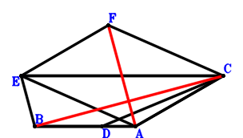
\(\because \) B, D, A are collinear and BD=2DA \(\therefore \small\overrightarrow{AD}=\dfrac{\small\overrightarrow{AB}}{3}\).\(\because \) EC//BD and EC=3BD \(\therefore \small\overrightarrow{AE}=3 \small\overrightarrow{AB} + \small\overrightarrow{AC} - 3 \small\overrightarrow{AD}=2 \small\overrightarrow{AB} + \small\overrightarrow{AC}\).\(\because \) FEAC is a parallelogram \(\therefore \small\overrightarrow{AF}=2 \small\overrightarrow{AB} + 2 \small\overrightarrow{AC}\).\(\because \) BA=AC \( \therefore\small\overrightarrow{AB}^{2} - \small\overrightarrow{AC}^{2}=0.\)In conclusion, \(\small\overrightarrow{CB} \cdot \small\overrightarrow{FA}=- \small\overrightarrow{AF} \cdot \left(\small\overrightarrow{AB} - \small\overrightarrow{AC}\right)=- \left(\small\overrightarrow{AB} - \small\overrightarrow{AC}\right) \cdot \left(2 \small\overrightarrow{AB} + 2 \small\overrightarrow{AC}\right)=- 2 \small\overrightarrow{AB}^{2} + 2 \small\overrightarrow{AC}^{2}=0\), that is, FA⊥BC.
Exercise 7： Let CDBA be a trapezoid with AC//BD and AC=3BD. CEFA is a trapezoid with AC//FE and AC=3FE. B, E, A are collinear and BE=2EA. BA=AC. Prove that DF⊥BC.
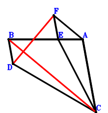
\(\because \) AC//BD and AC=3BD \(\therefore \small\overrightarrow{AD}=\small\overrightarrow{AB} + \dfrac{\small\overrightarrow{AC}}{3}\).\(\because \) B, E, A are collinear and BE=2EA \(\therefore \small\overrightarrow{AE}=\dfrac{\small\overrightarrow{AB}}{3}\).\(\because \) AC//FE and AC=3FE \(\therefore \small\overrightarrow{AF}=\dfrac{\small\overrightarrow{AB}}{3} - \dfrac{\small\overrightarrow{AC}}{3}\).\(\because \) BA=AC \( \therefore\small\overrightarrow{AB}^{2} - \small\overrightarrow{AC}^{2}=0.\)In conclusion, \(\small\overrightarrow{CB} \cdot \small\overrightarrow{DF}=\left(\small\overrightarrow{AB} - \small\overrightarrow{AC}\right) \cdot \left(- \small\overrightarrow{AD} + \small\overrightarrow{AF}\right)=\left(- \dfrac{2 \small\overrightarrow{AB}}{3} - \dfrac{2 \small\overrightarrow{AC}}{3}\right) \cdot \left(\small\overrightarrow{AB} - \small\overrightarrow{AC}\right)=- \dfrac{2 \small\overrightarrow{AB}^{2}}{3} + \dfrac{2 \small\overrightarrow{AC}^{2}}{3}=0\), that is, DF⊥BC.
Exercise 8： Let CDBA be a trapezoid with AC//BD and AC=2BD. EDAC is a trapezoid with EC//DA and EC=2DA. BA=AC. Prove that EA⊥BC.
Exercise 13： Let EDAC be a trapezoid with EC//DA and EC=3DA. B, D, C are collinear and DC=2BD. BA=AC. Prove that EA⊥BC.
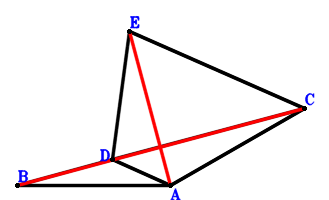
\(\because \) B, D, C are collinear and DC=2BD \(\therefore \small\overrightarrow{AD}=\dfrac{2 \small\overrightarrow{AB}}{3} + \dfrac{\small\overrightarrow{AC}}{3}\).\(\because \) EC//DA and EC=3DA \(\therefore \small\overrightarrow{AE}=\small\overrightarrow{AC} + 3 \small\overrightarrow{AD}=2 \small\overrightarrow{AB} + 2 \small\overrightarrow{AC}\).\(\because \) BA=AC \( \therefore\small\overrightarrow{AB}^{2} - \small\overrightarrow{AC}^{2}=0.\)In conclusion, \(\small\overrightarrow{CB} \cdot \small\overrightarrow{EA}=- \small\overrightarrow{AE} \cdot \left(\small\overrightarrow{AB} - \small\overrightarrow{AC}\right)=- \left(\small\overrightarrow{AB} - \small\overrightarrow{AC}\right) \cdot \left(2 \small\overrightarrow{AB} + 2 \small\overrightarrow{AC}\right)=- 2 \small\overrightarrow{AB}^{2} + 2 \small\overrightarrow{AC}^{2}=0\), that is, EA⊥BC.
Exercise 16： Let CBDA be a parallelogram. FBEC is a trapezoid with FC//BE and FC=3BE. D, E, A are collinear and DE=2EA. BA=AC. Prove that FA⊥BC.
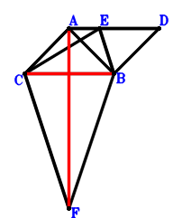
\(\because \) CBDA is a parallelogram \(\therefore \small\overrightarrow{AD}=\small\overrightarrow{AB} - \small\overrightarrow{AC}\).\(\because \) D, E, A are collinear and DE=2EA \(\therefore \small\overrightarrow{AE}=\dfrac{\small\overrightarrow{AD}}{3}=\dfrac{\small\overrightarrow{AB}}{3} - \dfrac{\small\overrightarrow{AC}}{3}\).\(\because \) FC//BE and FC=3BE \(\therefore \small\overrightarrow{AF}=3 \small\overrightarrow{AB} + \small\overrightarrow{AC} - 3 \small\overrightarrow{AE}=2 \small\overrightarrow{AB} + 2 \small\overrightarrow{AC}\).\(\because \) BA=AC \( \therefore\small\overrightarrow{AB}^{2} - \small\overrightarrow{AC}^{2}=0.\)In conclusion, \(\small\overrightarrow{CB} \cdot \small\overrightarrow{FA}=- \small\overrightarrow{AF} \cdot \left(\small\overrightarrow{AB} - \small\overrightarrow{AC}\right)=- \left(\small\overrightarrow{AB} - \small\overrightarrow{AC}\right) \cdot \left(2 \small\overrightarrow{AB} + 2 \small\overrightarrow{AC}\right)=- 2 \small\overrightarrow{AB}^{2} + 2 \small\overrightarrow{AC}^{2}=0\), that is, FA⊥BC.
Exercise 17： Let CDEA be a trapezoid with AC//ED and AC=3ED. FBEC is a trapezoid with FC//BE and FC=3BE. B, D, A are collinear and BD=2DA. BA=AC. Prove that FA⊥BC.
\(\because \) B, D, A are collinear and BD=2DA \(\therefore \small\overrightarrow{AD}=\dfrac{\small\overrightarrow{AB}}{3}\).\(\because \) AC//ED and AC=3ED \(\therefore \small\overrightarrow{AE}=\dfrac{\small\overrightarrow{AB}}{3} - \dfrac{\small\overrightarrow{AC}}{3}\).\(\because \) FC//BE and FC=3BE \(\therefore \small\overrightarrow{AF}=3 \small\overrightarrow{AB} + \small\overrightarrow{AC} - 3 \small\overrightarrow{AE}=2 \small\overrightarrow{AB} + 2 \small\overrightarrow{AC}\).\(\because \) BA=AC \( \therefore\small\overrightarrow{AB}^{2} - \small\overrightarrow{AC}^{2}=0.\)In conclusion, \(\small\overrightarrow{CB} \cdot \small\overrightarrow{FA}=- \small\overrightarrow{AF} \cdot \left(\small\overrightarrow{AB} - \small\overrightarrow{AC}\right)=- \left(\small\overrightarrow{AB} - \small\overrightarrow{AC}\right) \cdot \left(2 \small\overrightarrow{AB} + 2 \small\overrightarrow{AC}\right)=- 2 \small\overrightarrow{AB}^{2} + 2 \small\overrightarrow{AC}^{2}=0\), that is, FA⊥BC.
Exercise 18： Let CDBA be a trapezoid with AC//BD and AC=3BD. CBEA is a trapezoid with BC//EA and BC=2EA. E, F, A are collinear and FA=2EF. BA=AC. Prove that DF⊥BC.
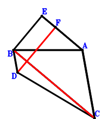
\(\because \) AC//BD and AC=3BD \(\therefore \small\overrightarrow{AD}=\small\overrightarrow{AB} + \dfrac{\small\overrightarrow{AC}}{3}\).\(\because \) BC//EA and BC=2EA \(\therefore \small\overrightarrow{AE}=\dfrac{\small\overrightarrow{AB}}{2} - \dfrac{\small\overrightarrow{AC}}{2}\).\(\because \) E, F, A are collinear and FA=2EF \(\therefore \small\overrightarrow{AF}=\dfrac{2 \small\overrightarrow{AE}}{3}=\dfrac{\small\overrightarrow{AB}}{3} - \dfrac{\small\overrightarrow{AC}}{3}\).\(\because \) BA=AC \( \therefore\small\overrightarrow{AB}^{2} - \small\overrightarrow{AC}^{2}=0.\)In conclusion, \(\small\overrightarrow{CB} \cdot \small\overrightarrow{DF}=\left(\small\overrightarrow{AB} - \small\overrightarrow{AC}\right) \cdot \left(- \small\overrightarrow{AD} + \small\overrightarrow{AF}\right)=\left(- \dfrac{2 \small\overrightarrow{AB}}{3} - \dfrac{2 \small\overrightarrow{AC}}{3}\right) \cdot \left(\small\overrightarrow{AB} - \small\overrightarrow{AC}\right)=- \dfrac{2 \small\overrightarrow{AB}^{2}}{3} + \dfrac{2 \small\overrightarrow{AC}^{2}}{3}=0\), that is, DF⊥BC.
Exercise 20： Let CBEA be a parallelogram. CDBA is a trapezoid with AC//BD and AC=3BD. E, F, A are collinear and EF=2FA. BA=AC. Prove that DF⊥BC.
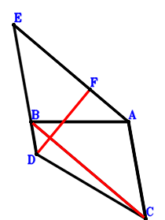
\(\because \) AC//BD and AC=3BD \(\therefore \small\overrightarrow{AD}=\small\overrightarrow{AB} + \dfrac{\small\overrightarrow{AC}}{3}\).\(\because \) CBEA is a parallelogram \(\therefore \small\overrightarrow{AE}=\small\overrightarrow{AB} - \small\overrightarrow{AC}\).\(\because \) E, F, A are collinear and EF=2FA \(\therefore \small\overrightarrow{AF}=\dfrac{\small\overrightarrow{AE}}{3}=\dfrac{\small\overrightarrow{AB}}{3} - \dfrac{\small\overrightarrow{AC}}{3}\).\(\because \) BA=AC \( \therefore\small\overrightarrow{AB}^{2} - \small\overrightarrow{AC}^{2}=0.\)In conclusion, \(\small\overrightarrow{CB} \cdot \small\overrightarrow{DF}=\left(\small\overrightarrow{AB} - \small\overrightarrow{AC}\right) \cdot \left(- \small\overrightarrow{AD} + \small\overrightarrow{AF}\right)=\left(- \dfrac{2 \small\overrightarrow{AB}}{3} - \dfrac{2 \small\overrightarrow{AC}}{3}\right) \cdot \left(\small\overrightarrow{AB} - \small\overrightarrow{AC}\right)=- \dfrac{2 \small\overrightarrow{AB}^{2}}{3} + \dfrac{2 \small\overrightarrow{AC}^{2}}{3}=0\), that is, DF⊥BC.
Exercise 22： Let CDBA be a trapezoid with AC//BD and 2AC=3BD. B, E, A are collinear and BE=2EA. BA=AC. Prove that DE⊥BC.
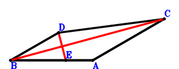
\(\because \) AC//BD and 2AC=3BD \(\therefore \small\overrightarrow{AD}=\small\overrightarrow{AB} + \dfrac{2 \small\overrightarrow{AC}}{3}\).\(\because \) B, E, A are collinear and BE=2EA \(\therefore \small\overrightarrow{AE}=\dfrac{\small\overrightarrow{AB}}{3}\).\(\because \) BA=AC \( \therefore\small\overrightarrow{AB}^{2} - \small\overrightarrow{AC}^{2}=0.\)In conclusion, \(\small\overrightarrow{CB} \cdot \small\overrightarrow{DE}=\left(\small\overrightarrow{AB} - \small\overrightarrow{AC}\right) \cdot \left(- \small\overrightarrow{AD} + \small\overrightarrow{AE}\right)=\left(- \dfrac{2 \small\overrightarrow{AB}}{3} - \dfrac{2 \small\overrightarrow{AC}}{3}\right) \cdot \left(\small\overrightarrow{AB} - \small\overrightarrow{AC}\right)=- \dfrac{2 \small\overrightarrow{AB}^{2}}{3} + \dfrac{2 \small\overrightarrow{AC}^{2}}{3}=0\), that is, DE⊥BC.
Exercise 24： Let CBDA be a parallelogram. CEBD is a trapezoid with DC//BE and DC=3BE. BA=AC. Prove that EA⊥BC.
Exercise 32： Let CEBD be a trapezoid with EC//BD and EC=3BD. C, A, D are collinear and CD=4AD. AB=CA. Prove that EB⊥BC.
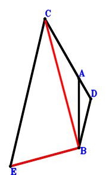
\(\because \) C, A, D are collinear and CD=4AD \(\therefore \small\overrightarrow{BD}=\dfrac{4 \small\overrightarrow{BA}}{3} - \dfrac{\small\overrightarrow{BC}}{3}\).\(\because \) EC//BD and EC=3BD \(\therefore \small\overrightarrow{BE}=\small\overrightarrow{BC} - 3 \small\overrightarrow{BD}=- 4 \small\overrightarrow{BA} + 2 \small\overrightarrow{BC}\).\(\because \) AB=CA \( \therefore\small\overrightarrow{AB}^{2} - \small\overrightarrow{AC}^{2}=\small\overrightarrow{BA}^{2} - \left(- \small\overrightarrow{BA} + \small\overrightarrow{BC}\right)^{2}=2 \small\overrightarrow{BA} \cdot \small\overrightarrow{BC} - \small\overrightarrow{BC}^{2}=0.\)In conclusion, \(\small\overrightarrow{BC} \cdot \small\overrightarrow{BE}=\small\overrightarrow{BC} \cdot \left(- 4 \small\overrightarrow{BA} + 2 \small\overrightarrow{BC}\right)=- 4 \small\overrightarrow{BA} \cdot \small\overrightarrow{BC} + 2 \small\overrightarrow{BC}^{2}=0\), that is, EB⊥BC.
Exercise 37： Let CEFA be a trapezoid with CA//EF and CA=3EF. CBDA is a trapezoid with BC//DA and BC=2DA. D, E, A are collinear and EA=2DE. BA=CA. Prove that CB⊥BF.
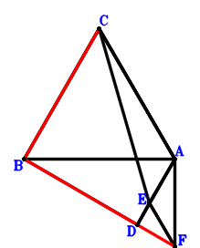
\(\because \) BC//DA and BC=2DA \(\therefore \small\overrightarrow{AD}=\dfrac{\small\overrightarrow{AB}}{2} - \dfrac{\small\overrightarrow{AC}}{2}\).\(\because \) D, E, A are collinear and EA=2DE \(\therefore \small\overrightarrow{AE}=\dfrac{2 \small\overrightarrow{AD}}{3}=\dfrac{\small\overrightarrow{AB}}{3} - \dfrac{\small\overrightarrow{AC}}{3}\).\(\because \) CA//EF and CA=3EF \(\therefore \small\overrightarrow{AF}=\dfrac{\small\overrightarrow{AB}}{3} - \dfrac{2 \small\overrightarrow{AC}}{3}\).\(\because \) BA=CA \( \therefore\small\overrightarrow{AB}^{2} - \small\overrightarrow{AC}^{2}=0.\)In conclusion, \(\small\overrightarrow{BF} \cdot \small\overrightarrow{CB}=\left(- \small\overrightarrow{AB} + \small\overrightarrow{AF}\right) \cdot \left(\small\overrightarrow{AB} - \small\overrightarrow{AC}\right)=\left(- \dfrac{2 \small\overrightarrow{AB}}{3} - \dfrac{2 \small\overrightarrow{AC}}{3}\right) \cdot \left(\small\overrightarrow{AB} - \small\overrightarrow{AC}\right)=- \dfrac{2 \small\overrightarrow{AB}^{2}}{3} + \dfrac{2 \small\overrightarrow{AC}^{2}}{3}=0\), that is, CB⊥BF.
Exercise 38： Let CBDA be a parallelogram. BEFA is a trapezoid with AF//BE and AF=3BE. D, E, A are collinear and DE=2EA. BA=AC. Prove that BC⊥CF.
\(\because \) CBDA is a parallelogram \(\therefore \small\overrightarrow{AD}=\small\overrightarrow{AB} - \small\overrightarrow{AC}\).\(\because \) D, E, A are collinear and DE=2EA \(\therefore \small\overrightarrow{AE}=\dfrac{\small\overrightarrow{AD}}{3}=\dfrac{\small\overrightarrow{AB}}{3} - \dfrac{\small\overrightarrow{AC}}{3}\).\(\because \) AF//BE and AF=3BE \(\therefore \small\overrightarrow{AF}=- 3 \small\overrightarrow{AB} + 3 \small\overrightarrow{AE}=- 2 \small\overrightarrow{AB} - \small\overrightarrow{AC}\).\(\because \) BA=AC \( \therefore\small\overrightarrow{AB}^{2} - \small\overrightarrow{AC}^{2}=0.\)In conclusion, \(\small\overrightarrow{CB} \cdot \small\overrightarrow{CF}=\left(\small\overrightarrow{AB} - \small\overrightarrow{AC}\right) \cdot \left(- \small\overrightarrow{AC} + \small\overrightarrow{AF}\right)=\left(- 2 \small\overrightarrow{AB} - 2 \small\overrightarrow{AC}\right) \cdot \left(\small\overrightarrow{AB} - \small\overrightarrow{AC}\right)=- 2 \small\overrightarrow{AB}^{2} + 2 \small\overrightarrow{AC}^{2}=0\), that is, BC⊥CF.
Exercise 40： Let CDEA be a trapezoid with AC//ED and AC=3ED. BEFA is a trapezoid with AF//BE and AF=3BE. B, D, A are collinear and BD=2DA. BA=AC. Prove that BC⊥CF.
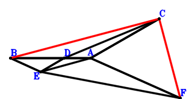
\(\because \) B, D, A are collinear and BD=2DA \(\therefore \small\overrightarrow{AD}=\dfrac{\small\overrightarrow{AB}}{3}\).\(\because \) AC//ED and AC=3ED \(\therefore \small\overrightarrow{AE}=\dfrac{\small\overrightarrow{AB}}{3} - \dfrac{\small\overrightarrow{AC}}{3}\).\(\because \) AF//BE and AF=3BE \(\therefore \small\overrightarrow{AF}=- 3 \small\overrightarrow{AB} + 3 \small\overrightarrow{AE}=- 2 \small\overrightarrow{AB} - \small\overrightarrow{AC}\).\(\because \) BA=AC \( \therefore\small\overrightarrow{AB}^{2} - \small\overrightarrow{AC}^{2}=0.\)In conclusion, \(\small\overrightarrow{CB} \cdot \small\overrightarrow{CF}=\left(\small\overrightarrow{AB} - \small\overrightarrow{AC}\right) \cdot \left(- \small\overrightarrow{AC} + \small\overrightarrow{AF}\right)=\left(- 2 \small\overrightarrow{AB} - 2 \small\overrightarrow{AC}\right) \cdot \left(\small\overrightarrow{AB} - \small\overrightarrow{AC}\right)=- 2 \small\overrightarrow{AB}^{2} + 2 \small\overrightarrow{AC}^{2}=0\), that is, BC⊥CF.
Exercise 43： Let CBDA be a parallelogram. CDEA is a trapezoid with DC//EA and DC=3EA. BA=AC. Prove that EB⊥BC.
Exercise 44： Let CBDA be a trapezoid with BC//DA and BC=2DA. CDEA is a trapezoid with CA//DE and CA=2DE. A, F, E are collinear and AF=2FE. BA=CA. Prove that CB⊥BF.
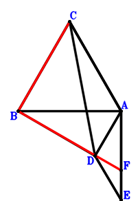
\(\because \) BC//DA and BC=2DA \(\therefore \small\overrightarrow{AD}=\dfrac{\small\overrightarrow{AB}}{2} - \dfrac{\small\overrightarrow{AC}}{2}\).\(\because \) CA//DE and CA=2DE \(\therefore \small\overrightarrow{AE}=\dfrac{\small\overrightarrow{AB}}{2} - \small\overrightarrow{AC}\).\(\because \) A, F, E are collinear and AF=2FE \(\therefore \small\overrightarrow{AF}=\dfrac{2 \small\overrightarrow{AE}}{3}=\dfrac{\small\overrightarrow{AB}}{3} - \dfrac{2 \small\overrightarrow{AC}}{3}\).\(\because \) BA=CA \( \therefore\small\overrightarrow{AB}^{2} - \small\overrightarrow{AC}^{2}=0.\)In conclusion, \(\small\overrightarrow{BF} \cdot \small\overrightarrow{CB}=\left(- \small\overrightarrow{AB} + \small\overrightarrow{AF}\right) \cdot \left(\small\overrightarrow{AB} - \small\overrightarrow{AC}\right)=\left(- \dfrac{2 \small\overrightarrow{AB}}{3} - \dfrac{2 \small\overrightarrow{AC}}{3}\right) \cdot \left(\small\overrightarrow{AB} - \small\overrightarrow{AC}\right)=- \dfrac{2 \small\overrightarrow{AB}^{2}}{3} + \dfrac{2 \small\overrightarrow{AC}^{2}}{3}=0\), that is, CB⊥BF.
Exercise 45： Let CBDA be a parallelogram. CDEA is a trapezoid with DC//EA and DC=2EA. E, F, A are collinear and FA=2EF. BA=AC. Prove that FB⊥BC.
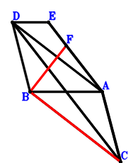
\(\because \) CBDA is a parallelogram \(\therefore \small\overrightarrow{AD}=\small\overrightarrow{AB} - \small\overrightarrow{AC}\).\(\because \) DC//EA and DC=2EA \(\therefore \small\overrightarrow{AE}=- \dfrac{\small\overrightarrow{AC}}{2} + \dfrac{\small\overrightarrow{AD}}{2}=\dfrac{\small\overrightarrow{AB}}{2} - \small\overrightarrow{AC}\).\(\because \) E, F, A are collinear and FA=2EF \(\therefore \small\overrightarrow{AF}=\dfrac{2 \small\overrightarrow{AE}}{3}=\dfrac{\small\overrightarrow{AB}}{3} - \dfrac{2 \small\overrightarrow{AC}}{3}\).\(\because \) BA=AC \( \therefore\small\overrightarrow{AB}^{2} - \small\overrightarrow{AC}^{2}=0.\)In conclusion, \(\small\overrightarrow{BF} \cdot \small\overrightarrow{CB}=\left(- \small\overrightarrow{AB} + \small\overrightarrow{AF}\right) \cdot \left(\small\overrightarrow{AB} - \small\overrightarrow{AC}\right)=\left(- \dfrac{2 \small\overrightarrow{AB}}{3} - \dfrac{2 \small\overrightarrow{AC}}{3}\right) \cdot \left(\small\overrightarrow{AB} - \small\overrightarrow{AC}\right)=- \dfrac{2 \small\overrightarrow{AB}^{2}}{3} + \dfrac{2 \small\overrightarrow{AC}^{2}}{3}=0\), that is, FB⊥BC.
Exercise 46： Let CBDA be a trapezoid with BD//CA and BD=2CA. A, E, D are collinear and ED=2AE. BA=CA. Prove that CB⊥BE.
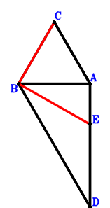
\(\because \) BD//CA and BD=2CA \(\therefore \small\overrightarrow{AD}=\small\overrightarrow{AB} - 2 \small\overrightarrow{AC}\).\(\because \) A, E, D are collinear and ED=2AE \(\therefore \small\overrightarrow{AE}=\dfrac{\small\overrightarrow{AD}}{3}=\dfrac{\small\overrightarrow{AB}}{3} - \dfrac{2 \small\overrightarrow{AC}}{3}\).\(\because \) BA=CA \( \therefore\small\overrightarrow{AB}^{2} - \small\overrightarrow{AC}^{2}=0.\)In conclusion, \(\small\overrightarrow{BE} \cdot \small\overrightarrow{CB}=\left(- \small\overrightarrow{AB} + \small\overrightarrow{AE}\right) \cdot \left(\small\overrightarrow{AB} - \small\overrightarrow{AC}\right)=\left(- \dfrac{2 \small\overrightarrow{AB}}{3} - \dfrac{2 \small\overrightarrow{AC}}{3}\right) \cdot \left(\small\overrightarrow{AB} - \small\overrightarrow{AC}\right)=- \dfrac{2 \small\overrightarrow{AB}^{2}}{3} + \dfrac{2 \small\overrightarrow{AC}^{2}}{3}=0\), that is, CB⊥BE.
Exercise 48： Let CDEA and CBDA be parallelograms. A, F, E are collinear and FE=2AF. BA=CA. Prove that CB⊥BF.
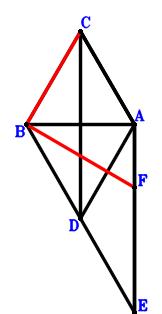
\(\because \) CBDA is a parallelogram \(\therefore \small\overrightarrow{AD}=\small\overrightarrow{AB} - \small\overrightarrow{AC}\).\(\because \) CDEA is a parallelogram \(\therefore \small\overrightarrow{AE}=\small\overrightarrow{AB} - 2 \small\overrightarrow{AC}\).\(\because \) A, F, E are collinear and FE=2AF \(\therefore \small\overrightarrow{AF}=\dfrac{\small\overrightarrow{AE}}{3}=\dfrac{\small\overrightarrow{AB}}{3} - \dfrac{2 \small\overrightarrow{AC}}{3}\).\(\because \) BA=CA \( \therefore\small\overrightarrow{AB}^{2} - \small\overrightarrow{AC}^{2}=0.\)In conclusion, \(\small\overrightarrow{BF} \cdot \small\overrightarrow{CB}=\left(- \small\overrightarrow{AB} + \small\overrightarrow{AF}\right) \cdot \left(\small\overrightarrow{AB} - \small\overrightarrow{AC}\right)=\left(- \dfrac{2 \small\overrightarrow{AB}}{3} - \dfrac{2 \small\overrightarrow{AC}}{3}\right) \cdot \left(\small\overrightarrow{AB} - \small\overrightarrow{AC}\right)=- \dfrac{2 \small\overrightarrow{AB}^{2}}{3} + \dfrac{2 \small\overrightarrow{AC}^{2}}{3}=0\), that is, CB⊥BF.